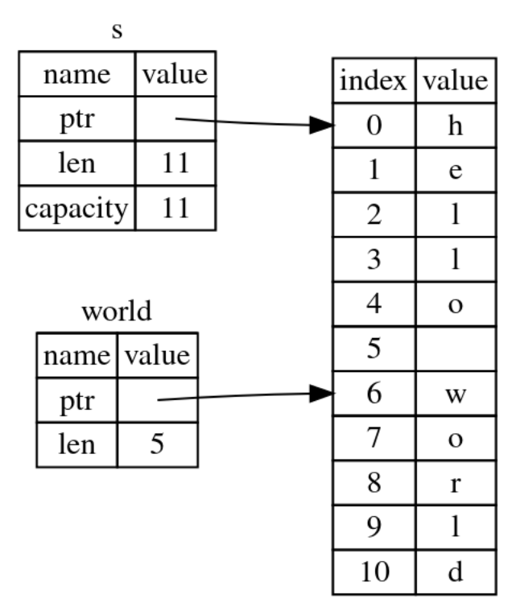

Rust-7-字符串slice
引言
这篇文章介绍Rust中字符串切片功能slice。
文章目录
0×1.字符串切片功能slice
Rust的slice功能，能够实现对字符串中指定范围值的引用，使用slice功能的语法是"&要slice引用的变量名[起始index..结束index+1]"，在诸多语言中取值范围类似[1..5]、[1,5]这种形式，大多数情况下都只包含前标，不包含后标，也就是只包含1，不包含5，所以当一个字符串是"NikkoCat"的时候，如果我们想取出Nikko，范围就应该是[0,5]，请看下面的实例：
fn main() {
let s = String::from("hello world");
//world变量是s的一个slice引用
//读取s变量值从索引6到10
//取出"hello world"中的"world"
let world=&s[6..11];
println!("{}",world);
}
上面的这段程序，slice引用在内存中的表现大致如下图所示，world变量只是在栈上储存了指向w的指针以及长度信息：
除此之外，slice语法中的前后标能够省略；省略前标，代表从0开始；省略后标，代表取到字符串末尾，请看下面的实例：
fn main() {
let mut s1=String::from("NikkoCat.com");
let s2=&s1[..8]; //等同于[0..8]
let s3=&s1[8..]; //等同于[8..12]
println!("{}", s2);
println!("{}", s3);
}
程序输出：
NikkoCat
.com
如果需要取整个字符串，可以使用下面两种形式：
fn main() {
let s1="NikkoCat.com";
let s2=&s1[..]; //省略前后标，相当于取整个字符串
let s3=&s1[..s1.len()]; //从0取到s1.len()
println!("{}", s2);
println!("{}", s3);
}
程序输出：
NikkoCat.com
NikkoCat.com
当一个字符串被slice引用时，在引用变量离开作用域之前，不能修改被引用的变量，请看下面的实例：
//这段程序无法被编译
fn main() {
let mut s1=String::from("NikkoCat");
let s2=&s1[0..5];
let s3=&s1[5..];
//我们尝试在s2和s3还未被使用之前，修改s1的值
//这会引发一个bug
//如果能够修改成功，s2和s3的指针就会指向一个错误的位置，编译器不会允许这样做
s1.push_str(".com");
println!("{}{}", s2, s3);
println!("{}", s1);
}
//必须在修改被引用的变量之前，先使用slice引用变量，这样编译器会根据上下文，在slice引用变量使用后释放
fn main() {
let mut s1=String::from("NikkoCat");
let s2=&s1[0..5];
let s3=&s1[5..];
println!("{}{}", s2, s3); //s2和s3在这里离开作用域
s1.push_str(".com"); //再去修改s1，是被允许的
println!("{}", s1);
}
0×2.使用slice功能实现读取单词操作
fn main() {
let s1:&str="Welcome to my website NikkoCat.com";
//将s1用引用方式传递给slice_s1函数
slice_s1(&s1);
println!("{}", s1);
}
fn slice_s1(s:&str) {
//为了能够使用字符串切片功能，需要将s先转化成字节数组
let bt=s.as_bytes();
//创建一个计数器
let mut _i:usize=0;
//bt.iter()函数可以返回字节数组中的每个元素
//.enumerate()函数，能够返回一个包含(索引,元素)的元组
//所以我们可以用两个变量来分别接收这个元组中的数据
//第一个变量接收索引值，第二个变量接收元素
for (_inum,_item) in bt.iter().enumerate() {
//如果元素值为空格，因为_item是&u8类型，所以这里b' '前面要加&
if _item==&b' ' {
//利用切片功能，打印出s中对应的单词
println!("slice: {}", &s[_i.._inum]);
//将计数器往后加1，指向单词的第一个字母
_i=_inum+1;
}
}
//打印最后一个单词
println!("slice: {}", &s[_i..]);
}
程序输出：
slice: Welcome
slice: to
slice: my
slice: website
slice: NikkoCat.com
Welcome to my website NikkoCat.com
对于上面这个程序，还有一个更加简单的实现方式，使用split_whitespace()函数，split_whitespace()函数会根据字符串中的空格来分割单词，请看下面的实例：
fn main() {
let s1="Hello Welcome to my website NikkoCat.com";
for s in s1.split_whitespace() {
println!("{}", s);
}
}
程序输出：
Hello
Welcome
to
my
website
NikkoCat.com